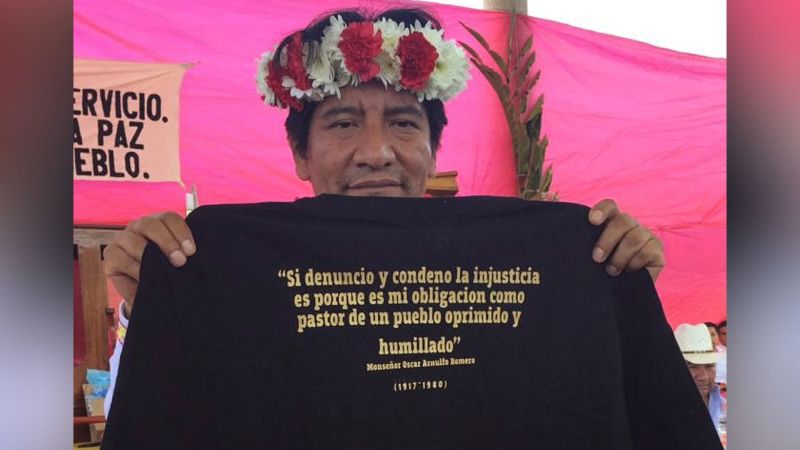

El Universal
Feminicidios de mujeres indígenas de la Montaña de Guerrero permanecen en la impunidad
Más información..
Juan Carlos Zavala

Fueron localizadas 792 plantas, de las cuales 219 tenían una altura de un metro.

Los agentes policiales informaron del hallazgo de los plantíos a la agencia del Ministerio Público de la Federación en la entidad, donde se continuarán las investigaciones correspondientes.

Pérez Yescas lamentó la falta de garantías para poder llevar a cabo la defensa de los derechos humanos en Oaxaca.

El acuerdo se logró con el apoyo de padres de familia de San Isidro Platanillo y Río de Sol.

Las llamas se encuentran avanzando por segundo día consecutivo; brigadas acuden para atender la emergencia.

Entre el 20 y 23 de febrero se desarrolló una robusta agenda de actividades en el marco de la Jornada Global: Justicia para Samir Flores Soberanes.

Defensores del medio ambiente enfrentan agresiones constantes, mientras empresas y autoridades son señaladas de colusión.

La Oficina llamó a las autoridades a garantizar la protección de los integrantes del colectivo "Defensores Ambientalistas de Barra de la Cruz".

Los habitantes de San Pedro El Alto recriminaron que las autoridades federales y estatales no intervengan ante esta situación.

El presidente municipal de San Juan Mixtepec pidió la presencia de patrullaje para cuidar a las familias.

La defensora indígena cumplió un año desplazada de María Lombardo de Caso a causa de amenazas de muerte en su contra, de las cuales responsabiliza al funcionario del INPI César Pulido.

Los docentes de la Sección 22 del SNTE bloquearon cruceros viales en la ciudad de Oaxaca y zona metropolitana para demandar solución a sus demandas laborales.

El campesino y activista náhuatl, era integrante de la Asamblea Permanente de los Pueblos de Morelos y miembro del Congreso Nacional Indígena.

En 2022 los elementos fueron obligados a devolver 6 bultos de cocaína que habían incautado de una avioneta que descendió en la biosfera de Montes Azules.

Los miembros de la familia se disputaron por el terreno, del que se desconoce ubicación y dimensión.

El secretario de Gobierno dijo que hay mucha desinformación en el caso y que esto solo tensa la relación entre comunidades.

Exigen justicia, respeto a la autonomía de las comunidades indígenas y la garantía de seguridad para todos.

El hecho ocurrió alrededor de las 14:30 horas, cuando la camioneta en la que viajaba las víctimas fue atacada.

La víctima también dijo que teme por su seguridad, ya que ha recibido amenazas por parte de la mujer extranjera.

La víctima estaba reportada como desaparecida y tres días después fue hallada muerta con signos de violencia.

Los comuneros fueron vistos por última vez en el peligroso "Corredor de la muerte", controlado por el CJNG.

Familiares de las víctimas, informaron que ambas personas salieron el pasado 7 de febrero hacia la ciudad de Colima, para tramitar su pasaporte y ya no regresaron.

El Estado mexicano señaló la gravedad de los hechos que derivaron en la muerte de la señora Ascencio.

Elementos de la Policia Estatal y de la Guardia Nacional estuvieron presentes, pero no pudieron intervenir porque son asuntos internos de la etnia.

La Oficina hizo un llamado a fiscalías a realizar investigaciones diligentes y eficaces en ambos casos.

El comité recordó que en el sexenio pasado se le preguntó cinco veces a AMLO por su libertad, y dijo que haría todo lo posible por liberarla.

Los familiares de Donato Hernández denunciaron ante Derechos Humanos que no fue atendido tras sufrir un accidente automovilístico; exigen justicia.

El acto ha sido condenado por el Gobernador, la Secretaría de las Mujeres y su partido politíco, quienes lo exhortan a enfrentar las consecuencias del ataque.

El tribunal internacional estableció que las autoridades internas mexicanas "no han cumplido sus obligaciones".

Dicho artículo reconoce a los pueblos índigenas y afromexicanos como sujetos de derecho.

Hombres, mujeres y niños han buscado refugio en municipios vecinos debido a los enfrentamientos entre grupos armados.

La joven de identidad reservada, llegó a su domicilio con diversos golpes y más tarde murió en el hospital.

Habitantes del municipio de Comala exigen que se les tome en cuenta en el proyecto que se incluye en el Plan Nacional Hídrico anunciado por la presidenta Claudia Sheinbaum.

Flora Gutiérrez, de la Red Nacional de Abogadas Indígenas, señala que la apropiación de la cultura de pueblos originarios es un fenómeno grave que violenta la ley.

La organización Mazatecas por la libertad exige al Tribunal Colegiado de Oaxaca resolver con justicia y ordenar la libertad plena de Peralta.

Los manifestantes acusan la inacción del fiscal general de Oaxaca ante los crímenes contra las mujeres.

La tarde de ayer, artesanos fueron víctimas del operativo contra el comercio informal en la entidad; recibieron mordidas por perros pertenecientes a la policía municipal.

El sacerdote había denunciado abusos contra las comunidades y fue amenzado.

Comunidades indígenas y ONGs denunciaron la muerte de especies nativas, animales domésticos y personas intoxicadas.

El Congreso lamentó que Pemex haya designado sólo a diez trabajadores activos para atender el derrame, por lo que llamaron a la sociedad civil a sumarse a las tareas de rescate de la fauna.

Las señoras de Alfajayucan son artesanas y productoras de cactáceas.

La chica google, originaria de Chapulhuacán, fue galardonada con presea nacional al mérito de las Universitarias STEM y el Premio Nacional “Martha Sánchez Néstor”.

Dos adultos y dos menores originarios de Oaxaca llevan 15 días desaparecidos tras ser detenidos en un retén militar en su camino hacia Sonora. Organizaciones indígenas demandan su pronta localización.

Las mujeres llevan a cabo antiguos rituales que no se contraponen con los médicos.

Autoridades de Capulálpam dieron a conocer que, pese a última clausura de la mina el pasado 5 de agosto, la minera Natividad y Anexas, S.A. de C.V sigue operando.

La abogada Flora Gutiérrez señala que dichos artículos son una parte modular sobre derecho a la consulta y el consentimiento que tienen las comunidades sobre su territorio y calidad de vida
Tres jornaleros wixárikas, de Jalisco, fueron levantados por hombres armados en julio; la familia está en desventaja por no dominar el idioma y desconocer las acciones jurídicas.

Ucizoni y cinco organizaciones más de Oaxaca y Veracruz realizan asambleas en pueblos zapotecos, mixes y chontales para advertir los daños que los megaproyectos han causado en la región del Istmo.

Testigos del crimen cuentan que los homicidas dispararon en repetidas ocasiones en contra de su víctima, y posteriormente emprendieron la huida.

Shanni y Rosa, estudiantes de bachillerato comunitario, lograron este reconocimiento por parte del Stockholm International Water Institute.

Los oficiales indígenas fueron reportados como desaparecidos desde el martes pasado.

El gobernador, Alfredo Ramírez Bedolla, indicó que los elementos se encuentran en valoraciones médicas.

Habitantes de la Sierra- Frontera denuncian que un grupo del crimen organizado entró a sus ejidos llevándose por la fuerza a más de 60 hombres y amenazaron en regresar por más gente.

El encuentro se realizará del 26 al 28 de septiembre en la Costa oaxaqueña e incluirá también a trans afrodescendientes y no binarios de Oaxaca y el país.

Con este hecho, suman ya cinco unidades las incendiadas por los pobladores, quienes tienen bloqueada la carretera Los Reyes-Zamora.

La unión ha acompañado a los pueblos para la recuperación de más de 30 mil hectáreas, ha asesorado a las comunidades en la producción de maíz y friijol y ha sido solidaria contra los abusos de la CFE.

Afirma la fundación Chispas de Vida, una organización sin fines de lucro que busca ayudar a la ciudadanía indígena.

En los últimos meses, algunas regiones de Chiapas se encuentran sumergidas en la violencia que genera la disputa de control de territorios entre grupos armados.

En 2010 había 369 mil 549 personas que hablaban lenguas indígenas, pero en 13 años se redujo.

Hasta ahora la Fiscalía de Jalisco mantiene la hipótesis de que ambos sufrieron un accidente automovilístico antes de encontrarlos al fondo de un barranco.

El INPI trastocó usos y costumbres de la tribu, denuncian integrantes de la tropa y autoridades eclesiásticas; a pesar del Plan de Justicia, que incluye un acueducto, las comunidades siguen sin el agua prometida.

Las fiestas patronales, que se realizarán del 15 al 24 de junio, contarán con diferentes actividades como música, danza y cabalgatas.

Los integrantes se manifiestan a la altura del metro Tepelcates, denuncian que el gobierno local y estatal no ha realizado acciones efectivas para sofocar el fuego.